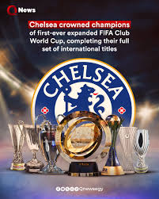

FİFA Klublararası Dünya Kuboku — FİFA tərəfindən altı kontinental konfederasiyanın çempion klubları arasında təşkil olunan futbol turniri.
İlk FİFA Klublararası Dünya Kuboku 2000-ci ilin yanvarında Braziliyada təşkil olunub. FİFA tərəfindən ilk dəfə 2000-ci ildə Braziliyada təşkil olunmuşdur. 2005-ci ildən etibarən isə turnir hər il təşkil olunur.
Dördillik fasilədən sonra, turnir Klublararası Dünya Kuboku adını aldı və 2005-ci ildə yenidən keçirilməyə başladı.
FİFA Klublararası Dünya Kuboku
Açılış ili 2000 (çempionat)
2005
Region Beynəlxalq (FİFA)
Komandaların sayı 7
Son çempion İspaniya Real Madrid (3 dəfə)
Ən uğurlu komanda İspaniya Barselona, İspaniya Real Madrid (3 dəfə)
Veb səhifəsi Klublararası Dünya
Tarixi
2017-ci ildə FIFA Qitələrarası Kubok (futbol) bütün qaliblərini dünya çempionu olaraq rəsmən tanıyıb.[1][2]
Bütün finallar
# İl Ev sahibi Klub
sayı Final Təsəlliverici final
Çempion İkinci Final
hesabı Üçüncü Dördüncü T/f
hesabı
1 2000 Braziliya
Braziliya 8 Braziliya
Korintians Paulista
(Braziliya) Braziliya
Vasku da Qama
(Braziliya) 0:0
p. 4:3 Meksika
Nekaksa
(Meksika) İspaniya
Real Madrid
(İspaniya) 1:1
p. 4:3
2001 İspaniya
İspaniya 12 Ləğv edilmişdir
2 2005 Yaponiya
Yaponiya 6 Braziliya
San-Paulo
(Braziliya) İngiltərə
Liverpul
(İngiltərə) 1:0 Kosta-Rika
Deportivo Saprissa
(Kosta-Rika) Səudiyyə Ərəbistanı
Əl-İttihad
(Səudiyyə Ərəbistanı) 3:2
3 2006 Yaponiya
Yaponiya 6 Braziliya
İnternasyonal
(Braziliya) İspaniya
Barselona
(İspaniya) 1:0 Misir
Əl-Əhli
(Misir) Meksika
Amerika
(Meksika) 2:1
4 2007 Yaponiya
Yaponiya 7 İtaliya
Milan
(İtaliya) Argentina
Boka Xuniors
(Argentina) 4:2 Yaponiya
Urava Reds
(Yaponiya) Tunis
ESS
(Tunis) 2:2
p. 4:2
5 2008 Yaponiya
Yaponiya 7 İngiltərə
Mançester Yunayted
(İngiltərə) Ekvador
LDU
(Ekvador) 1:0 Yaponiya
Qamba Osaka
(Yaponiya) Meksika
Paçuka
(Meksika) 1:0
6 2009 Birləşmiş Ərəb Əmirlikləri
BƏƏ 7 İspaniya
Barselona
(İspaniya) Argentina
Estudiantes
(Argentina) 2:1
ə.v. Cənubi Koreya
Pohanq Stilers
(Cənubi Koreya) Meksika
Atlante
(Meksika) 1:1
p. 4:3
7 2010 Birləşmiş Ərəb Əmirlikləri
BƏƏ 7 İtaliya
İnter Milan
(İtaliya) Konqo Demokratik Respublikası
TP Mazembe
(Konqo DR) 3:0 Braziliya
İnternasyonal
(Braziliya) Cənubi Koreya
Sonnam
(Cənubi Koreya) 4:2
8 2011 Yaponiya
Yaponiya 7 İspaniya
Barselona
(İspaniya) Braziliya
Santos
(Braziliya) 4:0 Qətər
Əl-Sədd
(Qətər) Yaponiya
Kaşiva Reysol
(Yaponiya) 0:0
p. 5:3
9 2012 Yaponiya
Yaponiya İspaniya Barselona
10 2013 Mərakeş
Mərakeş İspaniya Barselona
11 2014 Mərakeş
Mərakeş İspaniya Barselona
Bütün finallar
# İl Ev sahibi Klub
sayı Final Təsəlliverici final
Çempion İkinci Final
hesabı Üçüncü Dördüncü T/f
hesabı
1 2000 Braziliya
Braziliya 8 Braziliya
Korintians Paulista
(Braziliya) Braziliya
Vasku da Qama
(Braziliya) 0:0
p. 4:3 Meksika
Nekaksa
(Meksika) İspaniya
Real Madrid
(İspaniya) 1:1
p. 4:3
2001 İspaniya
İspaniya 12 Ləğv edilmişdir
2 2005 Yaponiya
Yaponiya 6 Braziliya
San-Paulo
(Braziliya) İngiltərə
Liverpul
(İngiltərə) 1:0 Kosta-Rika
Deportivo Saprissa
(Kosta-Rika) Səudiyyə Ərəbistanı
Əl-İttihad
(Səudiyyə Ərəbistanı) 3:2
3 2006 Yaponiya
Yaponiya 6 Braziliya
İnternasyonal
(Braziliya) İspaniya
Barselona
(İspaniya) 1:0 Misir
Əl-Əhli
(Misir) Meksika
Amerika
(Meksika) 2:1
4 2007 Yaponiya
Yaponiya 7 İtaliya
Milan
(İtaliya) Argentina
Boka Xuniors
(Argentina) 4:2 Yaponiya
Urava Reds
(Yaponiya) Tunis
ESS
(Tunis) 2:2
p. 4:2
5 2008 Yaponiya
Yaponiya 7 İngiltərə
Mançester Yunayted
(İngiltərə) Ekvador
LDU
(Ekvador) 1:0 Yaponiya
Qamba Osaka
(Yaponiya) Meksika
Paçuka
(Meksika) 1:0
6 2009 Birləşmiş Ərəb Əmirlikləri
BƏƏ 7 İspaniya
Barselona
(İspaniya) Argentina
Estudiantes
(Argentina) 2:1
ə.v. Cənubi Koreya
Pohanq Stilers
(Cənubi Koreya) Meksika
Atlante
(Meksika) 1:1
p. 4:3
7 2010 Birləşmiş Ərəb Əmirlikləri
BƏƏ 7 İtaliya
İnter Milan
(İtaliya) Konqo Demokratik Respublikası
TP Mazembe
(Konqo DR) 3:0 Braziliya
İnternasyonal
(Braziliya) Cənubi Koreya
Sonnam
(Cənubi Koreya) 4:2
8 2011 Yaponiya
Yaponiya 7 İspaniya
Barselona
(İspaniya) Braziliya
Santos
(Braziliya) 4:0 Qətər
Əl-Sədd
(Qətər) Yaponiya
Kaşiva Reysol
(Yaponiya) 0:0
p. 5:3
9 2012 Yaponiya
Yaponiya İspaniya Barselona
10 2013 Mərakeş
Mərakeş İspaniya Barselona
11 2014 Mərakeş
Mərakeş İspaniya Barselona
Komandaların performansı
Komanda Çempion Finalçı Üçüncü Dördüncü
İspaniya Barselona 2 (2009, 2011) 1 (2006)
Braziliya İnternasyonal 1 (2006) 1 (2010)
Braziliya Korintians Paulista 1 (2000)
Braziliya San-Paulo 1 (2005)
İtaliya Milan 1 (2007)
İngiltərə Mançester Yunayted 1 (2008)
İtaliya İnter Milan 1 (2010)
Braziliya Vasku da Qama 1 (2000)
İngiltərə Liverpul 1 (2005)
Argentina Boka Xuniors 1 (2007)
Ekvador LDU 1 (2008)
Argentina Estudiantes 1 (2009)
Konqo Demokratik Respublikası TP Mazembe 1 (2010)
Braziliya Santos 1 (2011)
Meksika Nekaksa 1 (2000)
Kosta-Rika Deportivo Saprissa 1 (2005)
Misir Əl-Əhli 1 (2006)
Yaponiya Urava Reds 1 (2007)
Yaponiya Qamba Osaka 1 (2008)
Cənubi Koreya Pohanq Stilers 1 (2009)
Qətər Əl-Sədd 1 (2011)
İspaniya Real Madrid 1 (2000)
Səudiyyə Ərəbistanı Əl-İttihad 1 (2005)
Meksika Amerika 1 (2006)
Tunis ESS 1 (2007)
Meksika Paçuka 1 (2008)
Meksika Atlante 1 (2009)
Cənubi Koreya Sonnam 1 (2010)
Yaponiya Kaşiva Reysol 1 (2011)
Ölkələrin performansı
Ölkə Çempion Finalçı Üçüncü Dördüncü
Braziliya Braziliya 3 (2000, 2005, 2006) 2 (2000, 2011) 1 (2010)
İspaniya İspaniya 2 (2009, 2011) 1 (2006) 1 (2000)
İtaliya İtaliya 2 (2007, 2010)
İngiltərə İngiltərə 1 (2008) 1 (2005)
Argentina Argentina 2 (2007, 2009)
Ekvador Ekvador 1 (2008)
Konqo Demokratik Respublikası Konqo DR 1 (2010)
Yaponiya Yaponiya 2 (2007, 2008) 1 (2011)
Meksika Meksika 1 (2000) 3 (2006, 2008, 2009)
Cənubi Koreya Cənubi Koreya 1 (2009) 1 (2010)
Kosta-Rika Kosta-Rika 1 (2005)
Misir Misir 1 (2006)
Qətər Qətər 1 (2011)
Səudiyyə Ərəbistanı Səudiyyə Ərəbistanı 1 (2005)
Tunis Tunis 1 (2007)
İstinadlar
"FIFA Club World Cup 2017" (PDF). FIFA Report 2017. Zurich: Fédération Internationale de Football Association: səhifələr 15, 40, 41, 42. dekabr 2017. 30 dekabr 2017 tarixində orijinalından (PDF) arxivləşdirilib. İstifadə tarixi: 25 fevral 2018.
FIFA Council approves key organisational elements of the FIFA World Cup Arxivləşdirilib 2017-10-27 at the Wayback Machine - Recognition of all European and South American teams that won the Intercontinental Cup – played between 1960 an